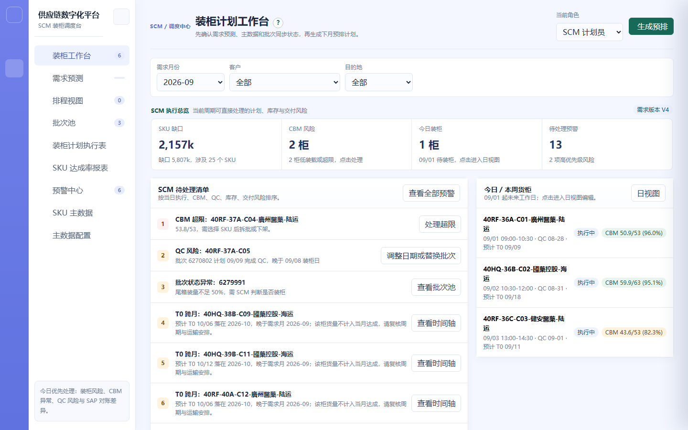

装柜工作台
项目信息
| 项目名称 | 供应链协同平台 | 模块 | 装柜计划工作台 |
|---|---|---|---|
| 需求名称 | 装柜工作台（SCM 每日入口） | 负责人 | SCM 产品线 |
| 文档版本 | V1.1 | 状态 | 已确认 |
| 更新日期 | 2026-09-20 | 关联原型 | supply-chain-prototype.html（装柜工作台页） |
版本记录
| 版本 | 日期 | 变更说明 | 作者 |
|---|---|---|---|
| V1.0 | 2026-09-11 | 初版：工作台三筛选、数据准备状态、四张核心指标卡与跳转、SCM 待处理清单排序、SKU 需求缺口与计划列表折叠表、生成与重新预排入口 | SCM 产品线 |
| V1.1 | 2026-09-20 | 筛选器由三筛选收敛为「需求月份」单筛选（默认当前月、仅支持单月）；指标卡由四张改为三张，口径重定为「装柜覆盖（SKU 口径）/ 本周期待办 / CBM 风险」，并统一点击跳转；移除「SKU 需求缺口」「计划列表」两个折叠模块（与 SKU 达成率报表重复）；待处理清单移除「SKU 需求缺口」条目类型 | SCM 产品线 |
需求背景
装柜工作台是 SCM 计划员每日打开系统的第一个页面。此前 SCM 要判断「今天能不能排柜、先处理什么、点进去到哪儿处理」，需要在需求预测、排程、批次池、预警中心之间来回切换，缺少一个统一的入口判断层。当前需收敛三点：所有排柜前置条件（需求版本、排程批次、QC、SAP 同步）在一个页面完整可见；风险按优先级排序而非平铺；每一项指标与风险都能一键直达处理位置。
工作台的核心定位是判断层而非处理层：它只回答「能不能排、先排什么」，不在这里直接编辑货柜或批次。本模块与排程视图（M03）、批次池（M04）的边界是：工作台负责汇总、排序与跳转，实际的数量、批次、货柜调整一律在对应模块完成。
需求目标
- 提供一个统一的 SCM 每日入口，先确认数据是否可用，再处理最高优先级风险。
- 按「需求月份」单筛选（默认当前月）汇总当前启用预测版本、批次池与货柜计划。
- 数据准备状态集中展示需求版本、排程、QC、SAP 的最近同步时间与异常，点击可跳转对应模块。
- 三张核心指标卡展示装柜覆盖（SKU 口径）、本周期待办与 CBM 风险，点击可跳转对应明细。
- SCM 待处理清单按固定优先级排序：当日执行风险 > CBM 超限 > QC/批次不足 > SAP 差异 > T0 延期 > 数据缺失。
- 生成预排仅使用可排且 QC 可满足的批次；重新预排保护既有货柜，只补新增需求或已有缺口。
- 所有缺失与风险保留预警提示，不静默排除、不自动阻断既有计划。
业务流程图
装柜工作台的端到端流程见下方流程图（独立文件），关键分支为「数据准备校验」「预排类型选择（首次生成 / 保护式重新预排）」「待处理清单优先级」。
界面截图
下图为现有系统「装柜工作台」页面的真实运行截图（供应链数字化平台）。工作台由顶部「需求月份」单筛选、数据准备状态卡、三张核心指标卡与待处理清单构成：

详细方案
| 一级模块 | 二级功能 | 原型 | 描述 |
|---|---|---|---|
| 装柜工作台 | 需求月份筛选 |
【页面元素】页面顶部仅一个筛选器：需求月份（下拉）；右侧为「刷新」按钮。 【交互说明】切换需求月份 → 重新汇总当前启用预测版本、批次池与货柜计划，刷新下方全部卡片与清单。 【功能逻辑】需求月份决定预测版本与排柜范围的基准，是工作台唯一的数据基准条件。一期仅支持按单月筛选，不支持跨月合并或月份区间。 【数据与内容规则】页面加载时默认选中当前自然月；可选范围为本月起 N 至 N+6。 |
|
| 数据准备状态 |
【页面元素】状态卡展示四类数据的最近同步时间与异常：需求版本（当前启用版本号与类型）、排程批次（最近同步时间）、QC（最近回传时间与风险批次数）、SAP（最近刷新时间与差异数）。每项右侧带跳转入口。 【交互说明】点需求版本 → 跳转需求预测模块；点排程批次 → 跳转批次池；点 QC → 跳转预警中心并筛选 QC 类；点 SAP → 触发刷新或跳转 SAP 差异任务。 【功能逻辑】四项状态任一异常（缺启用版本、批次同步失败、QC 风险、SAP 差异）即在对应项上以警示样式标识，并在待处理清单生成对应条目。 【文案规范】缺少当前启用预测版本时提示「缺少当前启用预测版本」，引导预测负责人处理，不自动阻断既有计划。 |
||
| 核心指标卡 |
【页面元素】三张可点击指标卡，统一点击即跳转： ① 装柜覆盖：主数值为「已排 SKU 数 / 有需求 SKU 数」（如 12 / 25 个 SKU），副文案为「已覆盖 xk · 待补缺口 xk」。注意此处为 SKU 覆盖口径而非柜数——货柜全部由系统预排或人工创建，不存在「该排未排」的空柜，用柜数做分子分母恒等、无意义。 ② 本周期待办：主数值为待处理条目总数（含 CBM 类），副文案按优先级分档「高 x · 中 y · 低 z」。 ③ CBM 风险：主数值为风险货柜总数（超限 + 低装载合计），副文案拆分「超限 x · 低装载 y」。 【交互说明】点装柜覆盖卡 → 跳转 SKU 达成率报表并聚焦明细；点本周期待办卡 → 页面内滚动定位到「SCM 待处理清单」；点 CBM 风险卡 → 跳转预警中心并自动筛选 CBM 超限与 CBM 不足 85% 两类预警。 【功能逻辑】三张卡实时按当前需求月份重算。 【数据与内容规则】装柜覆盖的分母只统计需求预测量 > 0 的 SKU，分子只统计当月预计装柜量 > 0 的 SKU；CBM 风险阈值：利用率 > 100% 计超限、≤ 85% 计低装载。 |
||
| SCM 待处理清单 |
【页面元素】按优先级排列的待处理条目列表，每条含风险类型、业务对象（货柜 / SKU / 批次）、风险说明与「去处理」入口。 【交互说明】点「去处理」→ 跳转对应货柜、批次、SKU 或预警详情；处理后该条目从清单移除或标记已处理。 【功能逻辑】清单按固定优先级排序：当日执行风险 > CBM 超限 > QC/批次不足 > SAP 差异 > T0 延期 > 数据缺失；同级按业务对象编号升序。 【数据与内容规则】清单为实时计算，不落库；风险消除后条目自动消失，处理动作写入操作日志。 |
||
| 生成 / 重新预排 |
【页面元素】页面右上角「生成预排」按钮；已存在计划时按钮文案为「重新预排」，点击后二次确认。 【交互说明】点「生成预排」→ 按 SKU + 客户 + 目的地的需求缺口生成货柜建议；点「重新预排」→ 二次确认后执行保护式重新预排，仅补新增需求或已有缺口。 【功能逻辑】生成预排仅使用可排且 QC 可满足的批次；重新预排不改变既有货柜，只为新增需求或现有缺口生成补量建议；需求下降形成的计划余量以预警提示。 【前置条件与权限】仅 SCM 计划员 / SCM 主管可发起；已确认需求版本缺失时提示先补齐，但不阻断既有计划。 【文案规范】「缺少当前启用预测版本」「主数据缺失」「QC 风险」「批次不足」为统一提示文案；上述异常一律保留预警、不静默排除。 |
与相邻模块的边界
| 本模块职责 | 边界 | 由谁负责 |
|---|---|---|
| 汇总数据准备状态并提供跳转 | 不在此页维护需求版本 | 需求预测（M02） |
| 按优先级排序并展示待处理清单 | 不在此页处理预警，处理在预警中心 | 预警中心（M06） |
| 生成 / 重新预排的发起入口 | 不在此页调整单个货柜的日期与批次 | 排程视图（M03）/ 货柜编辑抽屉（M09） |
异常与边界
| 场景 | 处理 |
|---|---|
| 缺少当前启用预测版本 | 状态卡与待处理清单提示，引导预测负责人处理；不自动阻断既有计划 |
| 主数据缺失 | 保留预警条目，不静默排除该 SKU |
| QC 风险 / 批次不足 | 在待处理清单以对应优先级展示，可跳转批次池或预警中心 |
| CBM 利用率 ≤ 85%（低装载） | 计入 CBM 风险柜数；确认后允许发布且不再提示 |
| CBM 利用率 > 100%（超限） | 高优先级待处理，排在待处理清单前列 |
| 保护式重新预排 | 既有货柜不被改写；需求下降形成的计划余量以预警提示 |
| 无当前月份数据 | 指标卡显示空态占位（如「无需求」），不报错 |
数据埋点
| 事件名 | 触发时机 | 关键属性 |
|---|---|---|
| workspace_filter_change | 切换需求月份 | 月份 |
| workspace_status_jump | 点击数据准备状态跳转 | 目标类型（需求版本/排程/QC/SAP） |
| workspace_kpi_click | 点击核心指标卡 | 卡片类型（装柜覆盖/本周期待办/CBM 风险）、当前值 |
| workspace_task_handle | 点击待处理清单「去处理」 | 风险类型、业务对象、排序位次 |
| workspace_auto_plan | 发起生成 / 重新预排 | 类型（首次/保护式）、缺口 SKU 数、生成建议数 |
上线计划
| 阶段 | 内容 | 时间 |
|---|---|---|
| 一期 | 需求月份单筛选、数据准备状态与跳转、三张指标卡与跳转、待处理清单排序、生成与保护式重新预排 | 待确认 |
| 二期 | 待处理清单自定义排序、指标卡趋势对比、一键批量处理同类风险 | 待确认 |
附录
| 术语 | 说明 |
|---|---|
| 数据准备状态 | 需求版本、排程批次、QC、SAP 四类数据的最近同步时间与异常汇总 |
| 达成率 | 当月预计装柜量 / 当月需求预测量，按 SKU 维度分别计算；工作台「装柜覆盖」卡按有需求 SKU 数中已覆盖的比例呈现 |
| 生成预排 | 按需求缺口首次生成货柜建议，仅使用可排且 QC 可满足的批次 |
| 保护式重新预排 | 不改变既有货柜，仅为新增需求或已有缺口生成补量建议 |
| 待处理优先级 | 当日执行风险 > CBM 超限 > QC/批次不足 > SAP 差异 > T0 延期 > 数据缺失 |